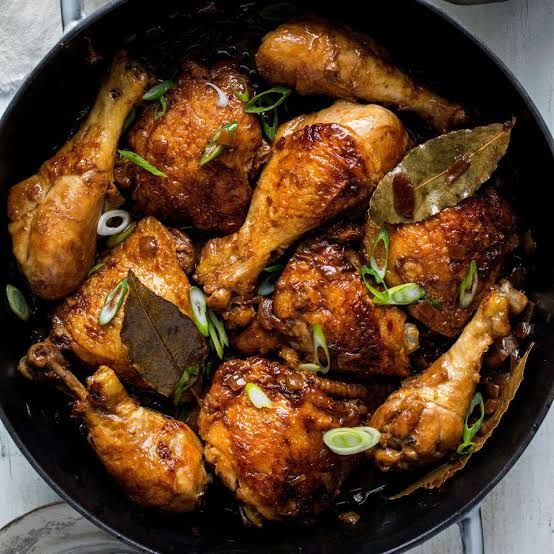
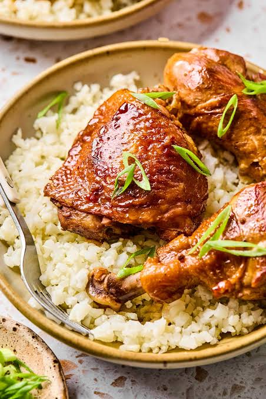
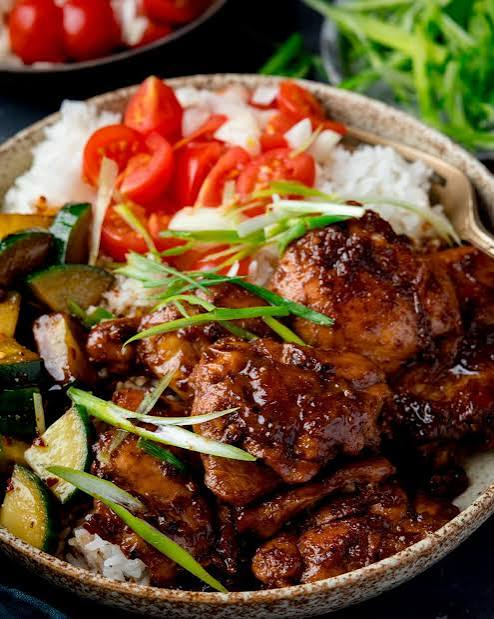

Home
Chicken Adobo Recipe



Description
Ingredients
- 2 tablespoons neutral oil, such as canola or avocado
- 5 chicken drumsticks (about 1 3/4 pounds)
- 1 large white onion, quartered and sliced inch thick
- 7 cloves garlic, smashed
- 4 bay leaves
- ¼ teaspoon whole black peppercorns
- ½ cup soy sauce
- ½ cup white vinegar
Steps
- Heat the oil in a large pot over medium heat.
- Add the chicken drumsticks and cook until golden brown on all sides.
- Remove the chicken from the pot and set aside.
- Add the onion and garlic to the pot and cook until softened.
- Return the chicken to the pot and add the soy sauce and vinegar.
- Bring the mixture to a boil, then reduce the heat and simmer for 20 minutes.
- Stir in the bay leaves and peppercorns.
- Simmer for another 10 minutes, or until the chicken is cooked through.